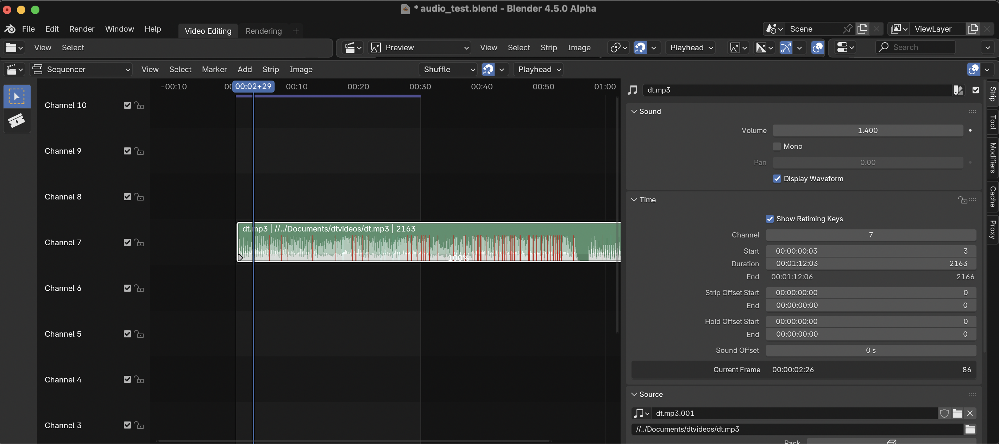
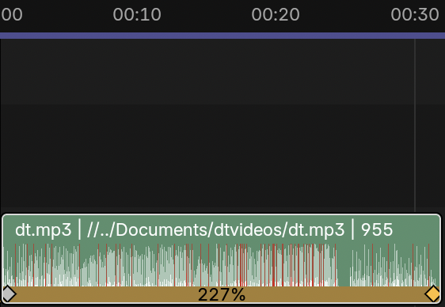

General notes on how audio and pitch works in Blender’s VSE
blender
c++
Author
TheKaceFiles
Published
June 7, 2025
This week, I have been taking the time to understand how Audaspace is integrated into Blender’s VSE. The most important files are blenkernel/intern/sound.cc and its header file blenkernel/BKE_sound.h. I will taking a little look at specifically animating sound properties (eg. volume and pitch) which @iss or Richard Antalik describes in the following thread. Furthermore, @neYyon or Jörg Müller gave tips on how to integrate the Rubber Band Library into Audaspace here.
Playing Audio
When you press Spacebar to play an audio clip in the sequencer, the BKE_sound_play_scene function is called, which makes several calls to the Audaspace library below.
Code
// Called by `wmOperatorStatus ED_screen_animation_play(bContext *C, int sync, int mode)` in `screen_cops.cc`
void BKE_sound_play_scene(Scene *scene)
{
std::lock_guard lock(g_state.sound_device_mutex);
sound_device_use_begin();
sound_verify_evaluated_id(&scene->id);
AUD_Status status;
const double cur_time = get_cur_time(scene);
AUD_Device_lock(g_state.sound_device);
if (scene->sound_scrub_handle &&
AUD_Handle_getStatus(scene->sound_scrub_handle) != AUD_STATUS_INVALID)
{
/* If the audio scrub handle is playing back, stop to make sure it is not active.
* Otherwise, it will trigger a callback that will stop audio playback. */
AUD_Handle_stop(scene->sound_scrub_handle);
scene->sound_scrub_handle = nullptr;
/* The scrub_handle started playback with playback_handle, stop it so we can
* properly restart it. */
AUD_Handle_pause(scene->playback_handle);
}
status = scene->playback_handle ? AUD_Handle_getStatus(scene->playback_handle) :
AUD_STATUS_INVALID;
if (status == AUD_STATUS_INVALID) {
sound_start_play_scene(scene);
if (!scene->playback_handle) {
AUD_Device_unlock(g_state.sound_device);
return;
}
}
if (status != AUD_STATUS_PLAYING) {
/* Seeking the synchronizer will also seek the playback handle.
* Even if we don't have A/V sync on, keep the synchronizer and handle seek time in sync. */
AUD_seekSynchronizer(cur_time);
AUD_Handle_setPosition(scene->playback_handle, cur_time);
AUD_Handle_resume(scene->playback_handle);
}
if (scene->audio.flag & AUDIO_SYNC) {
AUD_playSynchronizer();
}
AUD_Device_unlock(g_state.sound_device);
}
Animating Audio
There are currently 5 properties of audio that can be animated in Audiospace shown below:
Code
AnimateableProperty* SequenceEntry::getAnimProperty(AnimateablePropertyType type)
{
switch(type)
{
case AP_VOLUME:
return &m_volume;
case AP_PITCH:
return &m_pitch;
case AP_PANNING:
return &m_panning;
case AP_LOCATION:
return &m_location;
case AP_ORIENTATION:
return &m_orientation;
default:
return nullptr;
}
}
We’ll be looking at in particular how the volume and pitch is animated in Blender’s VSE.
Volume
(CAUTION: VOLUME WARNING)
Figure 1
The RNA for the volume property is defined rna_sequencer.cc in the function rna_def_audio_options
When we scrub the volume property, the function BKE_sound_set_scene_sound_volume_at_frame is called. For example below, sliding the volume to 1.4…

leads to the breakpoint in BKE_sound_set_scene_sound_volume_at_frame.
The frame variable corresponds to the location of the playhead at 2 seconds (60 frames) and 29 frames, so (60 + 29 = 89 frames). The handle variable is a pointer to Audaspace’s AUD_SequenceEntry class, which stores the variables such as volume and pitch for a sound sequence as shown below in Audaspace’s SequenceEntry.h.
Code
/// The animated volume.
AnimateableProperty m_volume;
/// The animated panning.
AnimateableProperty m_panning;
/// The animated pitch.
AnimateableProperty m_pitch;
/// The animated location.
AnimateableProperty m_location;
/// The animated orientation.
AnimateableProperty m_orientation;
The BKE_sound_set_scene_sound_volume_at_frame function just only makes a call to AUD_SequenceEntry_setAnimationData as shown below:
The important thing to note above is that BKE_sound_set_scene_sound_volume_at_frame is called by the function strip_update_sound_properties in sequencer.cc. In a future blog, I’ll likely discuss about the animated parameter in AUD_SequenceEntry_setAnimationData and have a demo program to test out, as currently, I’m not exactly sure what it does and haven’t investigated thoroughly yet!
Pitch
This GSOC project will primarily focus on the sound property of pitch for implementing pitch correction. In Blender, pitch is primarily affected by retiming keys, which allows you to change the playback speed of video/audio clips. However, this has the consequence of increasing the pitch when the playback speed is increased or decreasing the pitch when the playback speed is decreased. Below is an example of using retiming keys to increase the playback audio speed.

First, the code relevant to the drawing the retiming keys onto the audio strip can be found in sequencer_retiming_draw.cc but I haven’t had the time look into, but I believe it is not currently not too relevant for this project.
Now, one of the relevant function related to the functionality of the retiming keys (and therefore pitch!) is retiming_sound_animation_data_set in strip_retiming.cc which is declared as the following:
Code
void retiming_sound_animation_data_set(const Scene *scene, const Strip *strip)
{
/* Content cut off by `anim_startofs` is as if it does not exist for sequencer. But Audaspace
* seeking relies on having animation buffer initialized for whole sequence. */
if (strip->anim_startofs > 0) {
const int strip_start = time_start_frame_get(strip);
BKE_sound_set_scene_sound_pitch_constant_range(
strip->scene_sound, strip_start - strip->anim_startofs, strip_start, 1.0f);
}
const float scene_fps = float(scene->r.frs_sec) / float(scene->r.frs_sec_base);
const int sound_offset = time_get_rounded_sound_offset(strip, scene_fps);
RetimingRangeData retiming_data = strip_retiming_range_data_get(scene, strip);
for (int i = 0; i < retiming_data.ranges.size(); i++) {
RetimingRange range = retiming_data.ranges[i];
if (range.type == TRANSITION) {
const int range_length = range.end - range.start;
for (int i = 0; i <= range_length; i++) {
const int frame = range.start + i;
BKE_sound_set_scene_sound_pitch_at_frame(
strip->scene_sound, frame + sound_offset, range.speed_table[i], true);
}
}
else {
BKE_sound_set_scene_sound_pitch_constant_range(
strip->scene_sound, range.start + sound_offset, range.end + sound_offset, range.speed);
}
}
}
The code above loops over retiming key ranges (which is stored in the RetimingRange class and contains variables like the start and end frame, the playbeed speed, as well as it type which is defined as an enumerator below in strip_retiming.cc)
enum eRangeType {
LINEAR = 0,
TRANSITION = 1,
};
Additionally, retiming_sound_animation_data_set makes a call to two different pitch functions BKE_sound_set_scene_sound_pitch_at_frame and BKE_sound_set_scene_sound_pitch_constant_range depending on whether the range is LINEAR or TRANSITION and is defined as below in sound.cc:
where the TRANSITION range is represented by the retiming keys with 77% - 116% in between while the retiming keys with 77% or 116% represents a LINEAR range. In the example image above, the TRANSITION range interpolates between the 77% and 116% playback speed from the 00:23-00:36 range. Codewise, RetimingRange stores the interpolated values from 77% - 116% inside a vector speed_table which is set for which is set for each frame within the TRANSITION range.
Meanwhile, the LINEAR ranges (00:00-00:23 and 00:36-01:10) maintains a constant playback speed (and thus the same constant pitch for that particular playback speed).
Here’s an example audio clip which contains both the RetimingRanges type!
Next Steps
In the upcoming weeks, I will probably play around with the AUD_SequenceEntry class in an isolated environment to get a better sense of how it works and also mess around with the different AnimateablePropertys. - I currently have the Rubberband Library built as a static library in a separate, local fork, and make it public for code review this or next week. I will also take the time to understand Audaspace’s Effect and EffectReader class by looking at the many, many examples and see if I can do something with the Rubberband Library there
I also need to finish up writing the post about compiling the Rubberband Library, how to use it, and benchmarking it to make sure it is suitable and usable for Audaspace/Blender
Questions
These were things/questions I wasn’t sure about Blender’s codebase or where I can access the variable from the UI in the 1st week! These were answered by Aras, which I summarized his answers below.
It’s from “Render -> Render Audio…” menu item in Blender, but the operations are not too relevant to the project
Random Thoughts
I learned a lot of things during this first week from things like compiling/making a blog, to learning a little bit about CMAKE files and how to read them, and to using the debugger in VSCode more efficiently and for other projects
I hope these notes were somewhat useful or insightful to anyone looking to understand a bit about Blender’s VSE! I know these notes will be useful for me down the line as I start to implement the pitch correction toggle, and I will have more questions down the line! This post took way longer to write than I initially thought, but I really enjoyed taking the time to understand and explain a portion of Blender’s VSE.
It so far seems very likely that I will not have to manually implement the pitch correction algorithm myself!
In the future, I will probably update this post to have more information, as I’ve just mostly touched upon areas that were relevant to the project